Prereqs
- Completion of SSH Setup (including GitHub)
- Latest version of Git
- A GitHub account
- VS Code text editor
Requirements for local
- Latest version of Docker (temp link)
Requirements for remote
- Setup of the UCSB VPN for connecting to PSTAT servers
- SSH Setup (key generation and GitHub) on the remote server
First, we need to install some necessary extensions on VS Code enable features for dev container and remote development management. You will need the following extensions:
- Remote Development Pack - SSH + Dev Containers
- Jupyter - Notebook support
- Python - Intellisense, linting, debugging
You can install these by following the links and clicking "Install" on your browser or you can look them up on VS Code Extension search (using ctrl/⌘ + shift + x shortcut).
If you are planning to run your code via a remote computing server (PSTAT Denali, NSF Jetstream, AWS, etc.), you will first need to connect to your remote server. With our VS Code extensions, this is made simple:
- Click on the bottom right button to "Open a Remote Window". This will launch the VS Code command palette for remote connections:
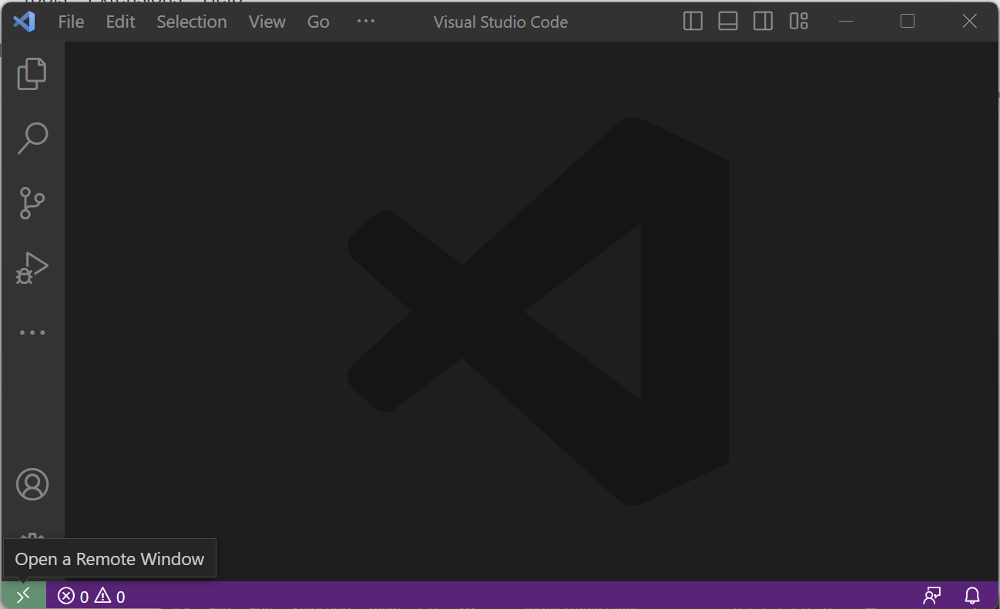
- Select "Connect Current Window to Host..." option.

- From here select the host you wish to connect to. If the remote host that you want to connect to does not appear in the options, use the "Add New SSH Host..." option and follow the prompts to set one up (More information about different server options can be found in the Remote Servers documentation entry).
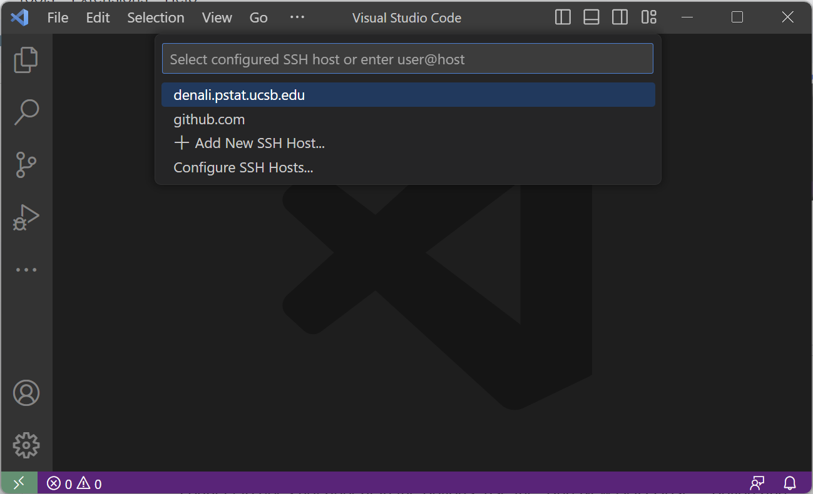
- From here, VS Code will automatically connect to the host for you. If this is your first time connecting to any remote server, it may take a few seconds for VS Code to install configurations in the background. You may also be prompted about the type of operating system your server uses. Please refer to your server's configuration for this information. Once the set up is complete you will be greeted with a similar window:
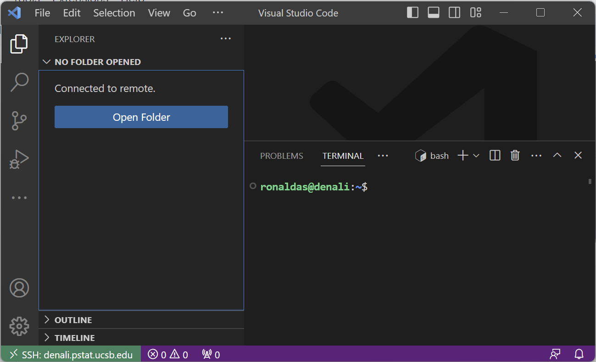
Now we are ready to clone and run an initial container setup from GitHub to use both locally and remotely.
- Using the sidebar, click on "Source Control" button (or using keyboard shortcut
ctrl/⌘ +shift+g):
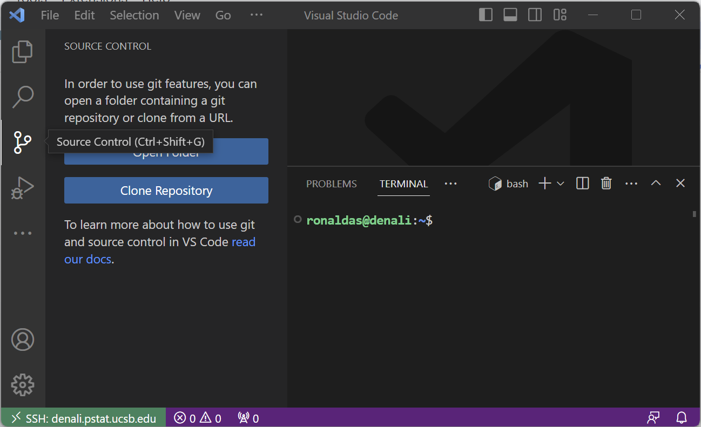
- Click on Clone Repository. This will open a Command Palette with an option to provide a GitHub URL.
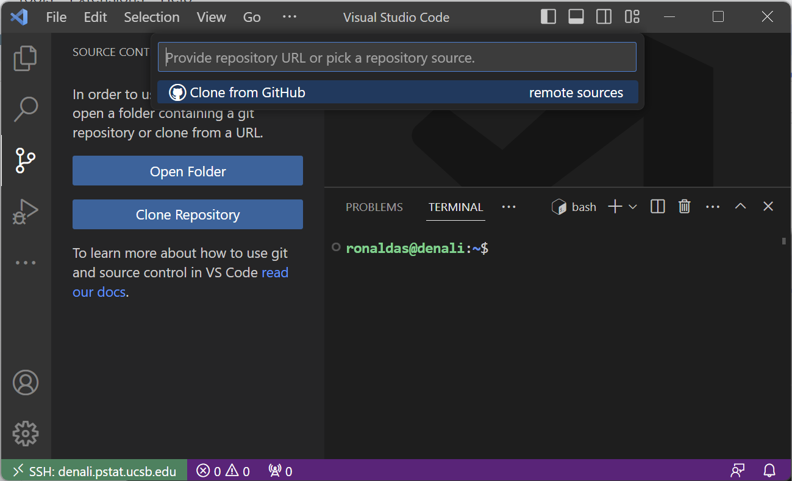
- For an initial dev container setup for Python/R development go to https://github.com/syoh/jupyter-rootless-docker (make sure you are signed in). Click on "Code" then "SSH" and copy the link:
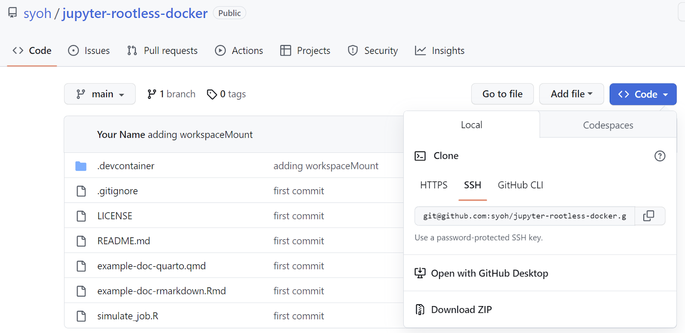
- Select the "Clone from GitHub" option. Allow the extension to sign in using GitHub.
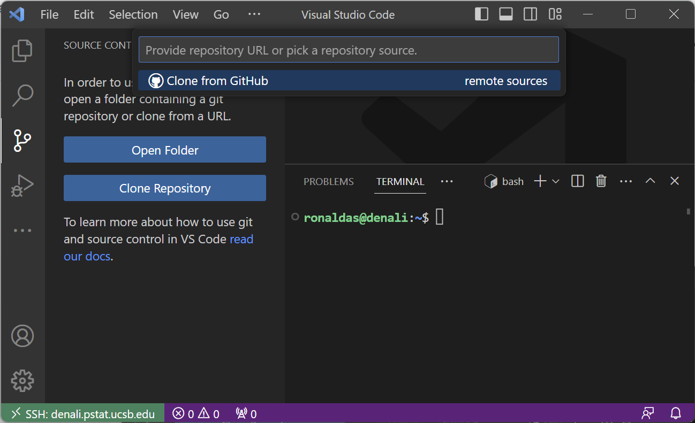
- Once GitHub sign-in is complete, paste the GitHub link into the command palette:
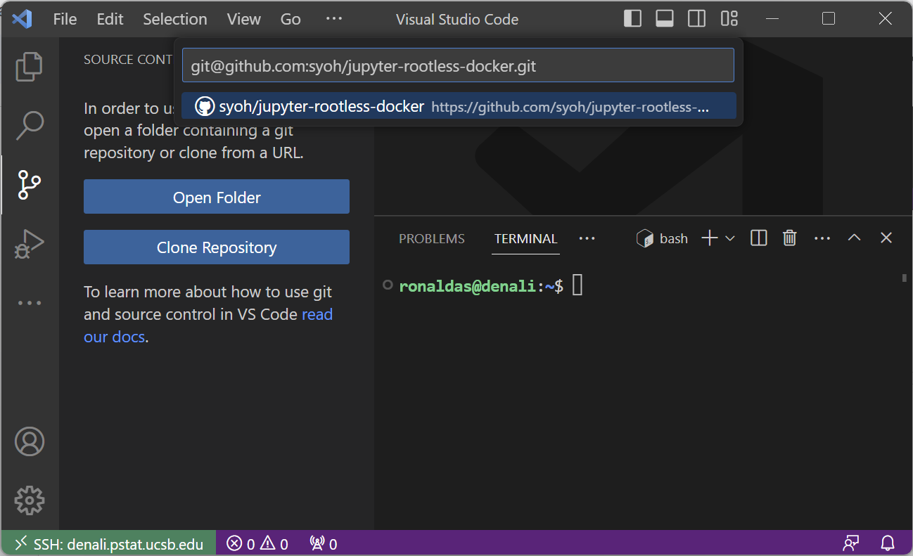
- You will be asked to choose a location to clone the repository into. On a local machine this will open your file explorer. On a remote server it will open another command palette with your current working directory. Depending on how you wish to setup your directories, you may need to create additional folders as you see fit.
- Once cloned, you will be prompted on whether you wish to open the cloned repository. Select "Open":
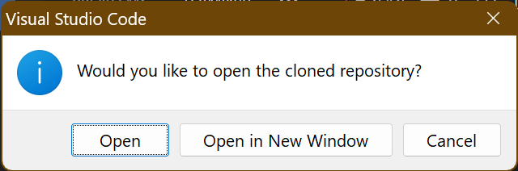
- Once the directory is open, you will have a dialogue box pop up to "Reopen in Container". Click this option and wait for the setup to complete. This will take a little bit of time so hang tight! You can press the "Show log" dialogue to track the progress.
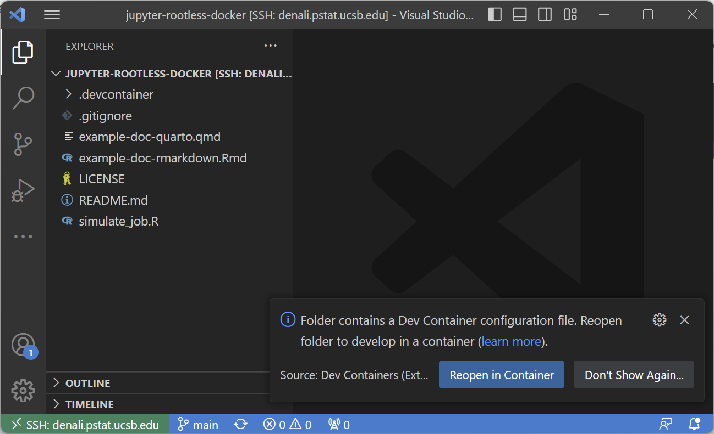
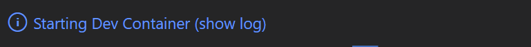
Now that your dev container is built, let's get familiar with some dev container basics.
Our dev containers use Docker. Docker is a container management tool that allows you to download and store "images" that can be built and used as "containers". Images are effectively small installation objects that contain all the necessary components to set up a specific container with a specific environment. Containers are effectively small environments that have just the base essentials to run all the development tooling that is required. Containers are built from images.
Here are some basic commands that will be useful to use in terminal:
docker images: lists all available images being tracked by Dockerdocker ps: lists all running containers along with their statusdocker ps -a: lists all containers even if they are not running
Once your container is built, you will be able to use it for your research or programming. The development container setups provided by the department should be a sufficient starting point. More advanced setups are discussed in the Devcontainer Customization tutorial. Here, we will show how to start up, attach, detach, and stop a container.
Starting/attaching to a container
To start and/or attach to a container simply open up the command palette by either clicking on the bottom left remotes button or using the keyboard shortcut (ctrl/⌘ + shift + p or F1). Then search for "Reopen in Container"
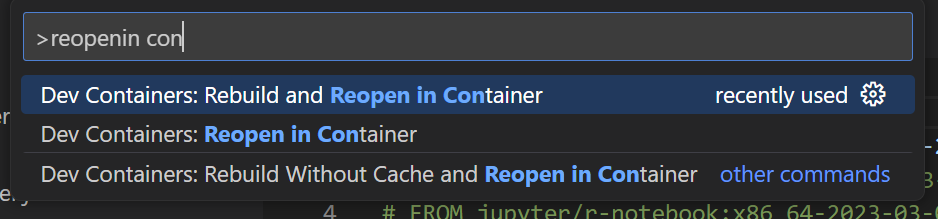
Launch "Reopen in Container" which will setup a new container environment or connect you to an existing one.
Detaching from a container
To detach from a running container, click on the bottom left remotes button or using the keyboard shortcut (ctrl/⌘ + shift + p or F1) search for "Close Remote Connection".
NEED IMAGE HERE
Clicking this will detach you from the running container. However, it will not close the container.
Stopping a running container
To stop a running container run the following commands:
docker ps: run this to figure out which container(s) are running. You will see a "NAMES" category, this will be the container name to use in the next command.docker container stop: replace
Running these 2 commands will stop this container as well as any code or services running in it.
More advanced commands
Docker comes with a swathe of terminal commands to manage containers. For more advanced commands look at TUTORIAL THAT HASN'T BEEN BUILT YET.
- Starting
- Stopping
- Detaching
- Attaching